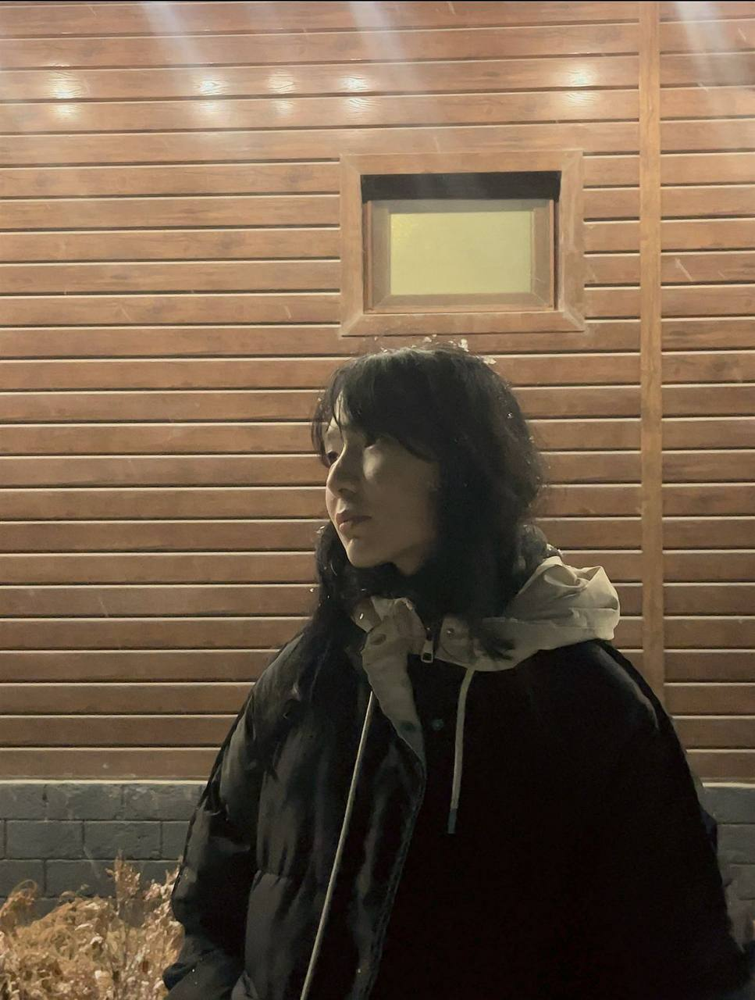
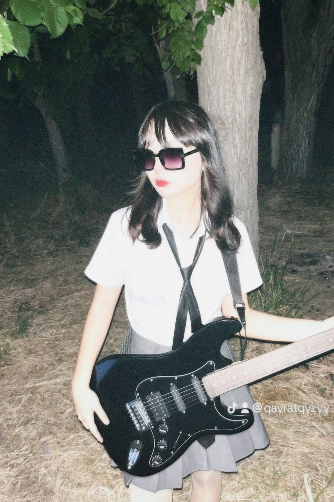
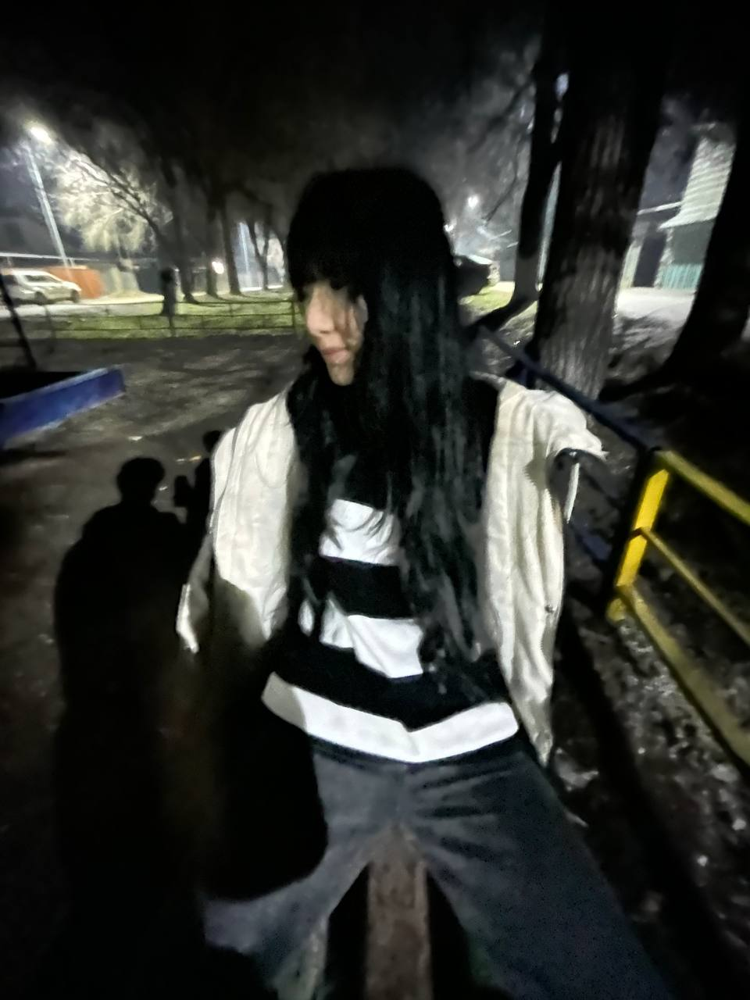
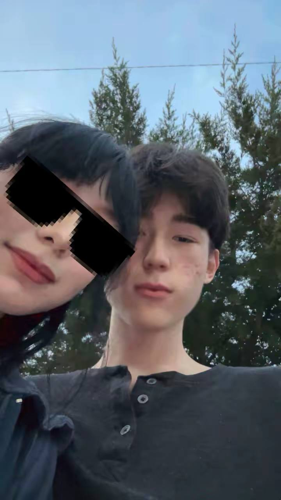

Даже когда мы занимались любовью, мною правила не похоть, а скорее любовь к тебе.
Ссоры:
Да, все наши ссоры начинал я, хоть и провокатором всегда была ты. Мне очень стыдно за себя, и я чувствую вину за то, что ни одну ссору я не мог решить без своей агрессии и вспыльчивости. Я всегда орал на тебя и оскорблял во время ссор в порыве гнева. Быть может, если бы я не был таким, ты бы не ушла от меня. Кто знает? Но факт остаётся фактом.
С твоей же стороны мне не нравилось то, что ты ни разу не шла навстречу и при каждой ссоре убегала со словами: «Давай тогда расстанемся». Странно, а ведь при ссорах с другими ты всегда всё решала, а со мной — нет. Меня это обижало, и я чувствовал себя просто запасным.
Когда я заметил, что ты не стараешься сохранить отношения, я понял, что отношения уже закончились. Я просто тупо тянул до последнего, пока ты не ушла к Айбеку, закончив со мной окончательно.
Кристина и моя проблема:
Да, это правда, что я общался с Кристиной на протяжении двух месяцев. Возможно, это будет выглядеть как оправдание, но я оставил с ней дружескую связь, и мы просто общались на кое-какие темы. Я сам тебе постоянно пудрил мозги, боясь, что ты общаешься с Айбеком, хотя сам же так поступал. Прости меня, пожалуйста.
А ещё ты, наверное, думаешь, что я тебя никогда не слушал, но я всегда прислушивался и понимал тебя. Я просто хотел знать о тебе больше и больше.
Также прости меня за мой характер. Мы и вправду не сходимся характерами. Я знал это, но думал, что если люди любят друг друга, то это не проблема. Как оказалось, это не так.
Я признаю, что поступал с тобой нечеловечески, и из-за меня у тебя было много стресса. Прости, пожалуйста.
Насчёт тебя:
Ты всегда говорила, что со мной такого не случится. Говорила, что ты моя, говорила, что уверена в себе, говорила, что боишься потерять меня и в тот день в подъезде спрашивала: «Вместе навсегда?»
Но всё же не сдержала слово.
Это, конечно, больно, но ты выбрала своё счастье. И тебя я особо не виню. Когда ты рассказала причины расставания и про свою проблему, я больше думал о самой проблеме и до сих пор не могу поверить, что это правда. Я не хочу, чтобы это было правдой.
Другое, что я хочу сказать: я ни капли не жалею о том, что отдал тебе всё своё первое и вообще вступил в эти отношения. Я все эти пять месяцев был счастлив и хочу сказать тебе спасибо за всё, что ты сделала.
Спасибо тебе, что научила любить. Спасибо за то, что дала мне почувствовать себя любимым. Спасибо тебе за все наши моменты, да даже за все наши ссоры.
Спасибо тебе большое.
На момент, когда я пишу этот текст, я всё ещё люблю тебя, но верю, что смогу отпустить и найти по-настоящему своего человека.
А тебе я желаю всего хорошего с Айбеком.



